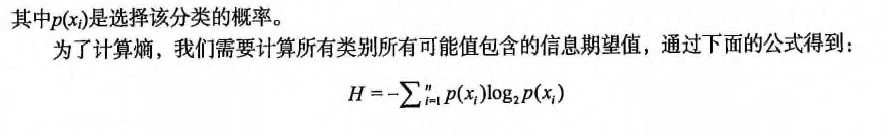

第3章 决策树¶
决策树 概述¶
决策树（Decision Tree）算法是一种基本的分类与回归方法，是最经常使用的数据挖掘算法之一。我们这章节只讨论用于分类的决策树。
决策树模型呈树形结构，在分类问题中，表示基于特征对实例进行分类的过程。它可以认为是 if-then 规则的集合，也可以认为是定义在特征空间与类空间上的条件概率分布。
决策树学习通常包括 3 个步骤：特征选择、决策树的生成和决策树的修剪。
决策树 场景¶
一个叫做 "二十个问题" 的游戏，游戏的规则很简单：参与游戏的一方在脑海中想某个事物，其他参与者向他提问，只允许提 20 个问题，问题的答案也只能用对或错回答。问问题的人通过推断分解，逐步缩小待猜测事物的范围，最后得到游戏的答案。
一个邮件分类系统，大致工作流程如下：

首先检测发送邮件域名地址。如果地址为 myEmployer.com, 则将其放在分类 "无聊时需要阅读的邮件"中。 如果邮件不是来自这个域名，则检测邮件内容里是否包含单词 "曲棍球" , 如果包含则将邮件归类到 "需要及时处理的朋友邮件", 如果不包含则将邮件归类到 "无需阅读的垃圾邮件" 。
决策树的定义：
分类决策树模型是一种描述对实例进行分类的树形结构。决策树由结点（node）和有向边（directed edge）组成。结点有两种类型：内部结点（internal node）和叶结点（leaf node）。内部结点表示一个特征或属性(features)，叶结点表示一个类(labels)。
用决策树对需要测试的实例进行分类：从根节点开始，对实例的某一特征进行测试，根据测试结果，将实例分配到其子结点；这时，每一个子结点对应着该特征的一个取值。如此递归地对实例进行测试并分配，直至达到叶结点。最后将实例分配到叶结点的类中。
决策树 原理¶
决策树 须知概念¶
信息熵 & 信息增益¶
熵（entropy）： 熵指的是体系的混乱的程度，在不同的学科中也有引申出的更为具体的定义，是各领域十分重要的参量。
信息论（information theory）中的熵（香农熵）： 是一种信息的度量方式，表示信息的混乱程度，也就是说：信息越有序，信息熵越低。例如：火柴有序放在火柴盒里，熵值很低，相反，熵值很高。
信息增益（information gain）： 在划分数据集前后信息发生的变化称为信息增益。
决策树 工作原理¶
如何构造一个决策树?
我们使用 createBranch() 方法，如下所示：
def createBranch():
'''
此处运用了迭代的思想。 感兴趣可以搜索 迭代 recursion， 甚至是 dynamic programing。
'''
检测数据集中的所有数据的分类标签是否相同:
If so return 类标签
Else:
寻找划分数据集的最好特征（划分之后信息熵最小，也就是信息增益最大的特征）
划分数据集
创建分支节点
for 每个划分的子集
调用函数 createBranch （创建分支的函数）并增加返回结果到分支节点中
return 分支节点
决策树 开发流程¶
收集数据：可以使用任何方法。 准备数据：树构造算法 (这里使用的是ID3算法，只适用于标称型数据，这就是为什么数值型数据必须离散化。 还有其他的树构造算法，比如CART) 分析数据：可以使用任何方法，构造树完成之后，我们应该检查图形是否符合预期。 训练算法：构造树的数据结构。 测试算法：使用训练好的树计算错误率。 使用算法：此步骤可以适用于任何监督学习任务，而使用决策树可以更好地理解数据的内在含义。
决策树 算法特点¶
优点：计算复杂度不高，输出结果易于理解，数据有缺失也能跑，可以处理不相关特征。 缺点：容易过拟合。 适用数据类型：数值型和标称型。
决策树 项目案例¶
项目案例1: 判定鱼类和非鱼类¶
项目概述¶
根据以下 2 个特征，将动物分成两类：鱼类和非鱼类。
特征： 1. 不浮出水面是否可以生存 2. 是否有脚蹼
开发流程¶
完整代码地址: https://github.com/apachecn/MachineLearning/blob/master/src/python/3.DecisionTree/DecisionTree.py
收集数据：可以使用任何方法 准备数据：树构造算法（这里使用的是ID3算法，因此数值型数据必须离散化。） 分析数据：可以使用任何方法，构造树完成之后，我们可以将树画出来。 训练算法：构造树结构 测试算法：使用习得的决策树执行分类 使用算法：此步骤可以适用于任何监督学习任务，而使用决策树可以更好地理解数据的内在含义
收集数据：可以使用任何方法

我们利用 createDataSet() 函数输入数据
def createDataSet(): dataSet = [[1, 1, 'yes'], [1, 1, 'yes'], [1, 0, 'no'], [0, 1, 'no'], [0, 1, 'no']] labels = ['no surfacing', 'flippers'] return dataSet, labels
准备数据：树构造算法
此处，由于我们输入的数据本身就是离散化数据，所以这一步就省略了。
分析数据：可以使用任何方法，构造树完成之后，我们可以将树画出来。

计算给定数据集的香农熵的函数
def calcShannonEnt(dataSet): # 求list的长度，表示计算参与训练的数据量 numEntries = len(dataSet) # 计算分类标签label出现的次数 labelCounts = {} # the the number of unique elements and their occurrence for featVec in dataSet: # 将当前实例的标签存储，即每一行数据的最后一个数据代表的是标签 currentLabel = featVec[-1] # 为所有可能的分类创建字典，如果当前的键值不存在，则扩展字典并将当前键值加入字典。每个键值都记录了当前类别出现的次数。 if currentLabel not in labelCounts.keys(): labelCounts[currentLabel] = 0 labelCounts[currentLabel] += 1 # 对于 label 标签的占比，求出 label 标签的香农熵 shannonEnt = 0.0 for key in labelCounts: # 使用所有类标签的发生频率计算类别出现的概率。 prob = float(labelCounts[key])/numEntries # 计算香农熵，以 2 为底求对数 shannonEnt -= prob * log(prob, 2) return shannonEnt
按照给定特征划分数据集
将指定特征的特征值等于 value 的行剩下列作为子数据集。
def splitDataSet(dataSet, index, value): """splitDataSet(通过遍历dataSet数据集，求出index对应的colnum列的值为value的行) 就是依据index列进行分类，如果index列的数据等于 value的时候，就要将 index 划分到我们创建的新的数据集中 Args: dataSet 数据集 待划分的数据集 index 表示每一行的index列 划分数据集的特征 value 表示index列对应的value值 需要返回的特征的值。 Returns: index列为value的数据集【该数据集需要排除index列】 """ retDataSet = [] for featVec in dataSet: # index列为value的数据集【该数据集需要排除index列】 # 判断index列的值是否为value if featVec[index] == value: # chop out index used for splitting # [:index]表示前index行，即若 index 为2，就是取 featVec 的前 index 行 reducedFeatVec = featVec[:index] ''' 请百度查询一下： extend和append的区别 music_media.append(object) 向列表中添加一个对象object music_media.extend(sequence) 把一个序列seq的内容添加到列表中 (跟 += 在list运用类似， music_media += sequence) 1、使用append的时候，是将object看作一个对象，整体打包添加到music_media对象中。 2、使用extend的时候，是将sequence看作一个序列，将这个序列和music_media序列合并，并放在其后面。 music_media = [] music_media.extend([1,2,3]) print music_media #结果： #[1, 2, 3] music_media.append([4,5,6]) print music_media #结果： #[1, 2, 3, [4, 5, 6]] music_media.extend([7,8,9]) print music_media #结果： #[1, 2, 3, [4, 5, 6], 7, 8, 9] ''' reducedFeatVec.extend(featVec[index+1:]) # [index+1:]表示从跳过 index 的 index+1行，取接下来的数据 # 收集结果值 index列为value的行【该行需要排除index列】 retDataSet.append(reducedFeatVec) return retDataSet
选择最好的数据集划分方式
def chooseBestFeatureToSplit(dataSet): """chooseBestFeatureToSplit(选择最好的特征) Args: dataSet 数据集 Returns: bestFeature 最优的特征列 """ # 求第一行有多少列的 Feature, 最后一列是label列嘛 numFeatures = len(dataSet[0]) - 1 # 数据集的原始信息熵 baseEntropy = calcShannonEnt(dataSet) # 最优的信息增益值, 和最优的Featurn编号 bestInfoGain, bestFeature = 0.0, -1 # iterate over all the features for i in range(numFeatures): # create a list of all the examples of this feature # 获取对应的feature下的所有数据 featList = [example[i] for example in dataSet] # get a set of unique values # 获取剔重后的集合，使用set对list数据进行去重 uniqueVals = set(featList) # 创建一个临时的信息熵 newEntropy = 0.0 # 遍历某一列的value集合，计算该列的信息熵 # 遍历当前特征中的所有唯一属性值，对每个唯一属性值划分一次数据集，计算数据集的新熵值，并对所有唯一特征值得到的熵求和。 for value in uniqueVals: subDataSet = splitDataSet(dataSet, i, value) # 计算概率 prob = len(subDataSet)/float(len(dataSet)) # 计算信息熵 newEntropy += prob * calcShannonEnt(subDataSet) # gain[信息增益]: 划分数据集前后的信息变化， 获取信息熵最大的值 # 信息增益是熵的减少或者是数据无序度的减少。最后，比较所有特征中的信息增益，返回最好特征划分的索引值。 infoGain = baseEntropy - newEntropy print 'infoGain=', infoGain, 'bestFeature=', i, baseEntropy, newEntropy if (infoGain > bestInfoGain): bestInfoGain = infoGain bestFeature = i return bestFeature
问：上面的 newEntropy 为什么是根据子集计算的呢？ 答：因为我们在根据一个特征计算香农熵的时候，该特征的分类值是相同，这个特征这个分类的香农熵为 0； 这就是为什么计算新的香农熵的时候使用的是子集。
训练算法：构造树的数据结构
创建树的函数代码如下：
def createTree(dataSet, labels): classList = [example[-1] for example in dataSet] # 如果数据集的最后一列的第一个值出现的次数=整个集合的数量，也就说只有一个类别，就只直接返回结果就行 # 第一个停止条件：所有的类标签完全相同，则直接返回该类标签。 # count() 函数是统计括号中的值在list中出现的次数 if classList.count(classList[0]) == len(classList): return classList[0] # 如果数据集只有1列，那么最初出现label次数最多的一类，作为结果 # 第二个停止条件：使用完了所有特征，仍然不能将数据集划分成仅包含唯一类别的分组。 if len(dataSet[0]) == 1: return majorityCnt(classList) # 选择最优的列，得到最优列对应的label含义 bestFeat = chooseBestFeatureToSplit(dataSet) # 获取label的名称 bestFeatLabel = labels[bestFeat] # 初始化myTree myTree = {bestFeatLabel: {}} # 注：labels列表是可变对象，在PYTHON函数中作为参数时传址引用，能够被全局修改 # 所以这行代码导致函数外的同名变量被删除了元素，造成例句无法执行，提示'no surfacing' is not in list del(labels[bestFeat]) # 取出最优列，然后它的branch做分类 featValues = [example[bestFeat] for example in dataSet] uniqueVals = set(featValues) for value in uniqueVals: # 求出剩余的标签label subLabels = labels[:] # 遍历当前选择特征包含的所有属性值，在每个数据集划分上递归调用函数createTree() myTree[bestFeatLabel][value] = createTree(splitDataSet(dataSet, bestFeat, value), subLabels) # print 'myTree', value, myTree return myTree
测试算法：使用决策树执行分类
def classify(inputTree, featLabels, testVec): """classify(给输入的节点，进行分类) Args: inputTree 决策树模型 featLabels Feature标签对应的名称 testVec 测试输入的数据 Returns: classLabel 分类的结果值，需要映射label才能知道名称 """ # 获取tree的根节点对于的key值 firstStr = inputTree.keys()[0] # 通过key得到根节点对应的value secondDict = inputTree[firstStr] # 判断根节点名称获取根节点在label中的先后顺序，这样就知道输入的testVec怎么开始对照树来做分类 featIndex = featLabels.index(firstStr) # 测试数据，找到根节点对应的label位置，也就知道从输入的数据的第几位来开始分类 key = testVec[featIndex] valueOfFeat = secondDict[key] print '+++', firstStr, 'xxx', secondDict, '---', key, '>>>', valueOfFeat # 判断分枝是否结束: 判断valueOfFeat是否是dict类型 if isinstance(valueOfFeat, dict): classLabel = classify(valueOfFeat, featLabels, testVec) else: classLabel = valueOfFeat return classLabel
使用算法：此步骤可以适用于任何监督学习任务，而使用决策树可以更好地理解数据的内在含义。
项目案例2: 使用决策树预测隐形眼镜类型¶
完整代码地址: https://github.com/apachecn/MachineLearning/blob/master/src/python/3.DecisionTree/DecisionTree.py
项目概述¶
隐形眼镜类型包括硬材质、软材质以及不适合佩戴隐形眼镜。我们需要使用决策树预测患者需要佩戴的隐形眼镜类型。
开发流程¶
- 收集数据: 提供的文本文件。
- 解析数据: 解析 tab 键分隔的数据行
- 分析数据: 快速检查数据，确保正确地解析数据内容，使用 createPlot() 函数绘制最终的树形图。
- 训练算法: 使用 createTree() 函数。
- 测试算法: 编写测试函数验证决策树可以正确分类给定的数据实例。
- 使用算法: 存储树的数据结构，以便下次使用时无需重新构造树。
收集数据：提供的文本文件
文本文件数据格式如下：
young myope no reduced no lenses pre myope no reduced no lenses presbyopic myope no reduced no lenses
解析数据：解析 tab 键分隔的数据行
lecses = [inst.strip().split('\t') for inst in fr.readlines()] lensesLabels = ['age', 'prescript', 'astigmatic', 'tearRate']
分析数据：快速检查数据，确保正确地解析数据内容，使用 createPlot() 函数绘制最终的树形图。
>>> treePlotter.createPlot(lensesTree)
训练算法：使用 createTree() 函数
>>> lensesTree = trees.createTree(lenses, lensesLabels) >>> lensesTree {'tearRate': {'reduced': 'no lenses', 'normal': {'astigmatic':{'yes': {'prescript':{'hyper':{'age':{'pre':'no lenses', 'presbyopic': 'no lenses', 'young':'hard'}}, 'myope':'hard'}}, 'no':{'age':{'pre': 'soft', 'presbyopic':{'prescript': {'hyper':'soft', 'myope': 'no lenses'}}, 'young':'soft'}}}}}
测试算法: 编写测试函数验证决策树可以正确分类给定的数据实例。
使用算法: 存储树的数据结构，以便下次使用时无需重新构造树。
使用 pickle 模块存储决策树
def storeTree(inputTree, filename): impory pickle fw = open(filename, 'wb') pickle.dump(inputTree, fw) fw.close() def grabTree(filename): import pickle fr = open(filename, 'rb') return pickle.load(fr)
- 作者：片刻 小瑶
- GitHub地址: https://github.com/apachecn/MachineLearning
- 版权声明：欢迎转载学习 => 请标注信息来源于 ApacheCN